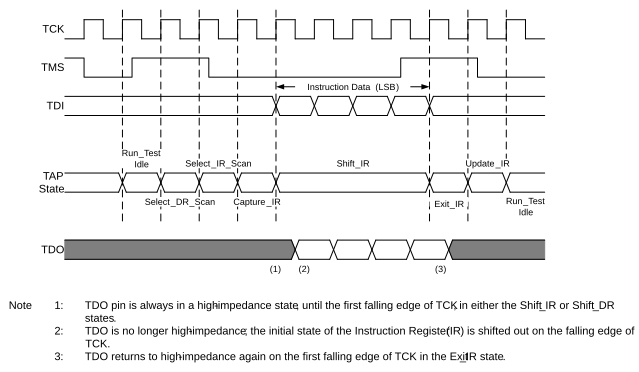

The TAP controller on PIC18-Q84 family devices is a synchronous finite state machine that implements the standard 16 states for JTAG. Figure 39-3 shows all the module states of the TAP controller. All Boundary Scan Test (BST) instructions and test results are communicated through the TAP via the TDI pin in a serial format, Least Significant bit first.
By manipulating the state of TMS and the clock pulses on TCK, the TAP controller can be moved through all of the defined module states to capture, shift and update various instruction and/or data registers. Figure 39-3 shows the state changes on TMS as the controller cycles through its state machine. Figure 39-4 shows the timing of TMS and TCK while transitioning the controller through the appropriate module states for shifting in an instruction. In this example, the sequence shown demonstrates how an instruction is read by the TAP controller. All TAP controller states are entered on the rising edge of the TCK pin. In this example, the TAP controller starts in the Test-Logic Reset state. Since the state of the TAP controller is dependent on the previous instruction and, therefore, may be unknown, it is good programming practice to begin in the Test-Logic Reset state.

When TMS is asserted low on the next rising edge of TCK, the TAP controller will move into the Run-Test/Idle state. On the next two rising edges of TCK, TMS is high; this moves the TAP controller to the Select-IR-Scan state.
On the next two rising edges of TCK, TMS is held low; this moves the TAP controller into the Shift-IR state. An instruction is shifted into the Instruction Shift register via the TDI on the next four rising edges of TCK. After the TAP controller enters this state, the TDO pin goes from a High-Impedance state to Active. The controller shifts out the initial state of the Instruction Register (IR) on the TDO pin, on the falling edges of TCK, and continues to shift out the contents of the Instruction Register while in the Shift-IR state. The TDO returns to the High-Impedance state on the first falling edge of TCK upon exiting the Shift state.
On the next three rising edges of TCK, the TAP controller exits the Shift-IR state, updates the Instruction Register and then moves back to the Run-Test/Idle state. Data, or another instruction, can now be shifted into the appropriate Data or Instruction Register.